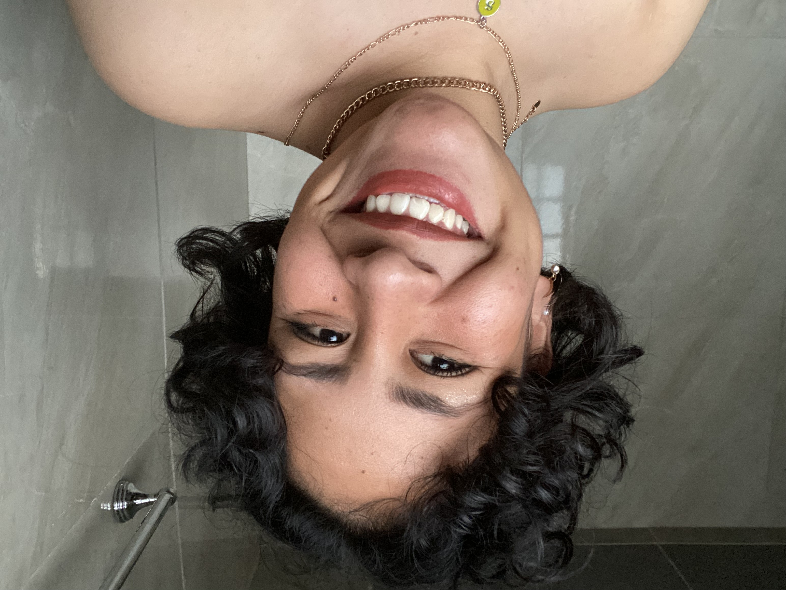
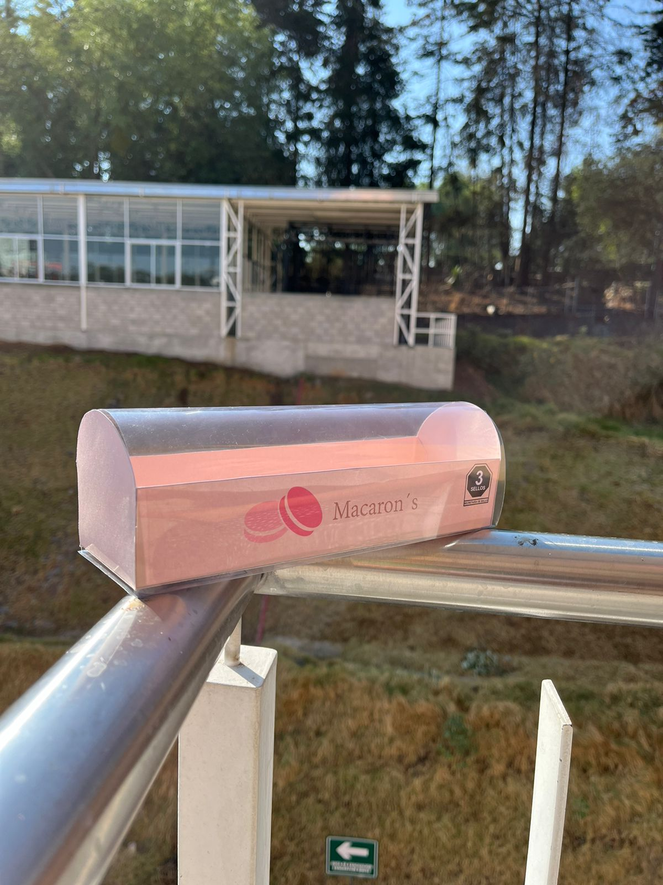
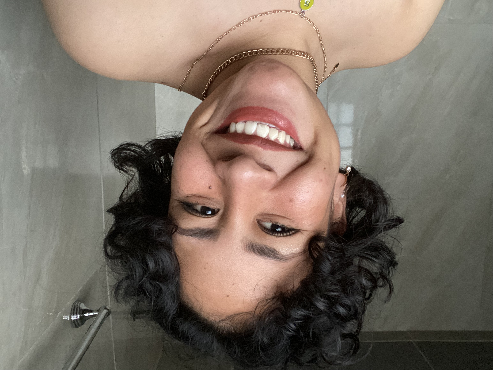
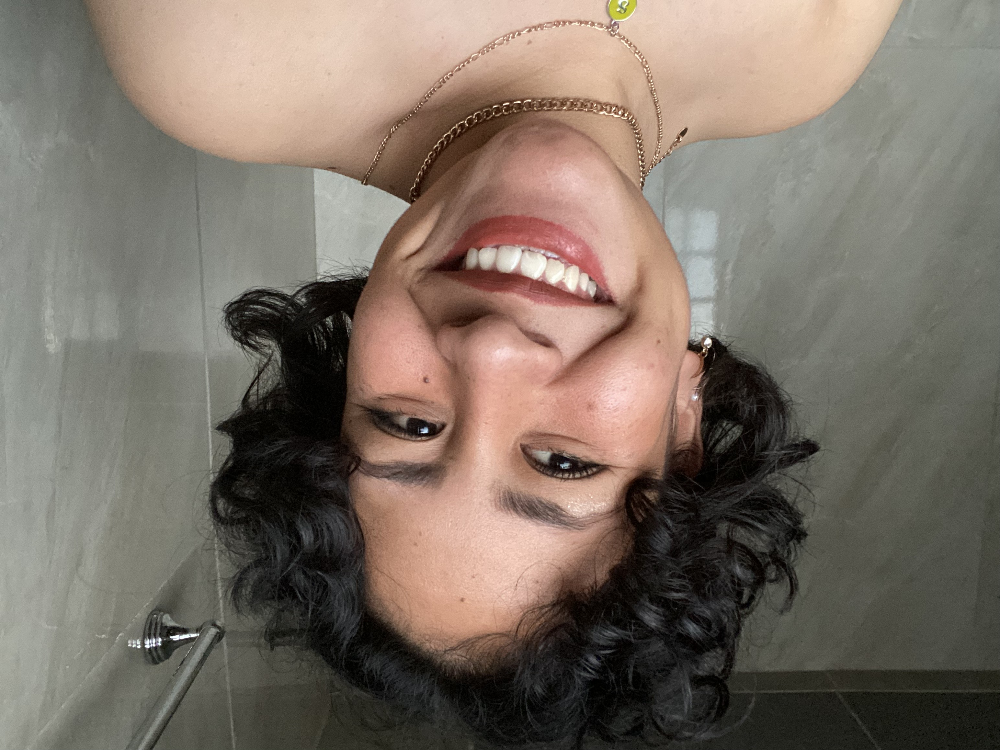
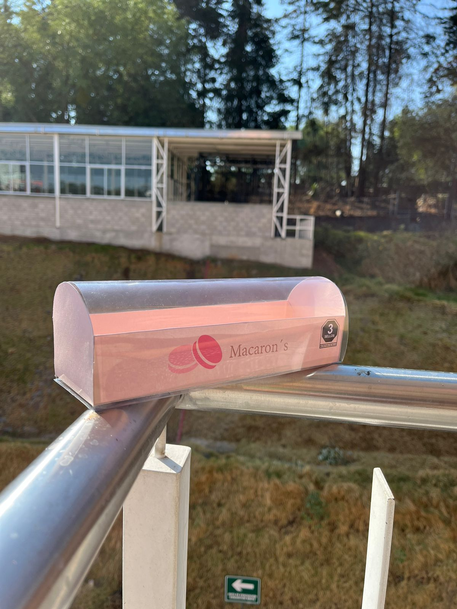
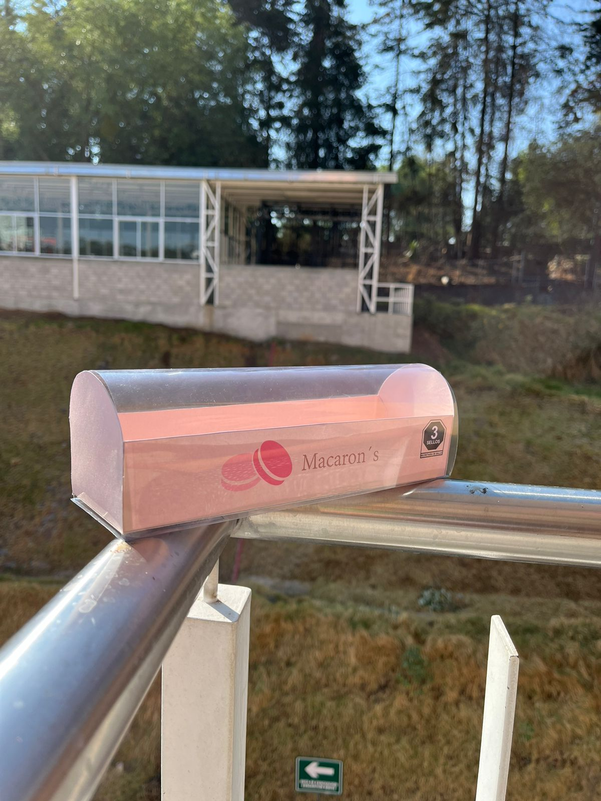

Estudiante en la licenciatura de diseño en la UAM-C
ABOUT
ME
Soy estudiante de la Licenciatura en Diseño en la Universidad Autónoma Metropolitana, Unidad Cuajimalpa. Mi formación me ha permitido desarrollar habilidades en diseño gráfico, diseño industrial, diseño interactivo; combinando creatividad, funcionalidad y una visión estratégica del diseño.
Me interesa la innovación, la resolución de problemas y la creación de experiencias visuales que generen impacto. A lo largo de mi trayectoria academica, he trabajado en diversos proyectos que abarcan desde el diseño de productos, branding, ceramica, termoformados, grabados, el uso de electricidad y prototipos en maquinaria CNC.

Mis Habilidades
Software
Educación
Licenciatura en diseño, Universidad Autonoma Metropolitana, Unidad Cuajimalpa (En curso, 8º trimestre)
Áreas de enfoque: Diseño Industrial; desarrolo y conceptuaización de objetos funcionales, incluyendo selección de materiales y prototipado.
Proyectos destacados:
Renovación de la visibilidad de proyectos trimestrales en la UAM-C
Cerámica
Sistema de señalización háptica
Idiomas
Español - Nativo
Inglés - C1
Latín - B2
Italiano - Básico/ En formación
Mis proyectos

1er Trimestre
Taller de lenguajes para el diseño
Impartió: Lorena Alejandra Guerrero Morán
Dentro de este taller el objetivo fue hacer que el alumno aprenda de manera significativa a visualizar y representar graficamente cuerpos geometricos mediante el bocetaje para el diseño bi y tridimensional.
2do Trimestre
Taller de Representación y Expresión del Dibujo y Trazo Geométrico
Impartió: Héctor Manuel Orihuela Páez
Práctica de técnicas de reproducción de trazos geométricos para el manejo de técnicas de dibujo para la representación visual del objeto.
2do Trimestre
Laboratorio Básico de Diseño Bi y Tridimensional
Impartió: Lorena Alejandra Guerrero Morán
En este primer laboratorio, se realizó un rompecabezas para niños destinado a un zoológico, el cual presenta las especies endémicas de México. Para su desarrollo, se aplicaron los fundamentos teóricos de la morfología en el diseño de los elementos.
Materiales utilizados: MDF de 3 mm de espesor, pintura en aerosol y acrílicas, con acabado en laca transparente. Además, se tuvo el primer acercamiento al uso de herramientas como caladoras, sierra de mesa, así como el manejo de limas y lijas.
3er Trimestre
Laboratorio de Diseñño Integral I
Impartió: Abraham Lepe Romano
"Fantasea lo que sea"
Este laboratorio tiene como objetivo aplicar de manera significativa los conocimientos adquiridos sobre los fundamentos del diseño y las habilidades de representación, adquiridos en cursos previos, para generar y evaluar alternativas de solución a problemas integrales de diseño. En este contexto, como proyecto final, se desarrolló un juego de mesa destinado a niños de 6 a 8 años, cuyo propósito es estimular la creatividad, la imaginación y la expresión oral. Los niños crean historias a partir de tarjetas que contienen elementos seleccionados aleatoriamente mediante un dado, promoviendo así un aprendizaje lúdico y dinámico.
Integrantes: Abigail Luna -Tania Quiroz - Sofía Pérez e Isaac Zaldívar
4to Trimestre
Autómata
El proyecto final consistió en el diseño y creación de una autómata, aplicando los conocimientos adquiridos en expresión gráfica y dibujo técnico. Se trabajó en la representación precisa de los componentes y su funcionamiento, integrando creatividad y principios mecánicos para desarrollar un artefacto funcional y visualmente atractivo.
Taller de Expresión Gráfica y Dibujo Técnico
Impartió: Arturo Luna
4to Trimestre
Diseño de Sistema
Laboratorio de Diseño Integral II
Impartió: Alejandro Rodea Chávez
En este laboratorio, desarrollé un sistema (objeto) enfocado en resolver una problemática específica de la universidad: la falta de espacios adecuados para la carrera de diseño, particularmente la ausencia de suficientes salones con restiradores para las clases de taller de expresión gráfica y dibujo técnico. Como solución, diseñé un restirador individual estandarizado para hojas de tamaño doble carta, proporcionando una herramienta eficaz y funcional para los estudiantes. Este proyecto aplicó los principios del diseño como proceso prefigurador de la forma de objetos, buscando satisfacer tanto los requerimientos funcionales como expresivos en el contexto académico.
5to Trimestre
Taller de procesos y Tec. para la Producción de Modelos, Prot. y Originales
Impartió: Jésus A. Hernández Cadena - Enrique García Salazar.
Para este taller, realicé una lámpara que cuenta una historia inspirada en temas de vaqueros y el viejo oeste. Utilicé tubo de PVC y estireno como materiales principales, cortando el tubo en aros de 3.5 cm de altura. Diseñé a mano los elementos que quería incorporar en mi historia, y cada aro fue trabajado con un mototool, realizando un desvaste en las áreas seleccionadas para hacer los detalles más visibles cuando la luz los iluminara. El sistema de iluminación consiste en una tira LED RGB, que responde al ritmo de la música, creando una atmósfera dinámica. Para la tapa, utilizamos termoformado a partir de una media esfera, que sirvió como matriz para darle forma de cápsula.
Materiales: Tubo de PVC, estireno, resanador automotriz, pintura en aerosol, tira de luz led RGB y acetato. Herramientas: Mototool, sierra de mesa, escantillones y termoformadora.
5to Trimestre
Taller de Representación y Expresión Digital Bidimensional
Impartió: Dina Rochman Beer
En este taller aplicamos conocimientos básicos de geometría en dos dimensiones para la creación de la forma. En este trimestre, comenzamos con la formación en AutoCAD, y el ejercicio consistió en el diseño de embalaje. En mi caso, realicé el empaque para unos macarons, buscando un diseño minimalista e innovador. Para lograrlo, incorporé una "cúpula" de acetato que permitiera visualizar el producto, creando una presentación atractiva y funcional. Siguiedo las normas de salud establecidas en México.
Materiales: Cartulina opalina y acetato.
5to Trimestre
Laboratorio de Diseño Integral III
Impartió: Aaron José Caballero Quiroz
Sistema de Integración Modular
En este laboratorio enfrentamos una problemática de discriminación en un ambiente profesional, donde una pasante con tatuajes era rechazada por un abogado debido a prejuicios sociales y personales. Al profundizar en la situación, descubrimos que el conflicto iba más allá de los tatuajes, siendo en realidad una cuestión de rencor y jerarquías mal manejadas.
Integrantes: Victor Nava - Sofía Pérez - Isaac Zaldívar
Nuestra Propuesta
En base a nuestra problematica, desarrollamos un imagotipo como identidad de nuestro sistema. La justificación a este imagotipo es que tomamos un cráneo humano haciendo referencia al tatuaje de nuestro personaje principal que es la pasante, acompañado del lema “Social Quality” que es uno de nuestros principales objetivos, lograr un equilibrio social libre de prejuicios y jerarquias dentro de los ambientes laborales.
5to Trimestre
Laboratorio de Diseño Integral III
Impartió: Aaron José Cabalelro Quiroz
La solución fue la creación de un sistema de integración modular, que consitió en la adecuación de un espacio con una mesa redonda, diseñada para promover la igualdad, la colaboración y el intercambio de ideas entre todos los miembros del equipo.Este enfoque no solo buscaba nivelar las jerarquías, sino también fomentar un ambiente más inclusivo y abierto. permitirá a los usuarios identificar de manera precisa las rutas y puntos clave, como accesos, rampas, escaleras, elevadores y áreas de evacuación.
6to Trimestre
Taller de Representación y Expresión Digital Tridimensional
Impartió: Héctor Manuel Orihuela Pérez
Modelado de un Escritorio
Esta primera actividad fue una introducción al modelado 3D. En esta ocasión, se elaboró un "escritorio soñado". El propósito de este ejercicio fue experimentar con diferentes formas, ensamblajes y piezas, además de profundizar en el uso de AutoCAD como herramienta principal.
Juguete armable, Impresión 3D
Como último ejercicio de esta UEA, nos enfocamos en diseñar un juguete armable para un huevo Kinder Maxi, dirigido a niños. El aspecto fundamental de este ejercicio fue la impresión 3D, lo que nos permitió explorar diversos aspectos del diseño del juguete, como las tolerancias y los ensambles. De igual manera, avanzamos en la creación de un render en 3ds Max, incorporando diferentes escenarios y su correspondiente instructivo.
“Chequito”
Integrantes: Sofía Pérez e Isaac Zaldívar
6to Trimestre
Taller de Procesos y Tecnologías para la Reproducción Industrial
Impartió: Enrique García Salazar - Dina Rochman Beer
En este taller realizamos cerámica, y nuestro trabajo consistió en la creación de macetas. Siguiendo las indicaciones de la UEA, que aborda el concepto de "reproducción industrial", nos enfocamos en los procesos y tecnologías fabriles e industriales para la reproducción de objetos e imágenes.
Como parte de este ejercicio, se nos solicitó reproducir cinco macetas, cada una con sus respectivos "morralitos", empaques y bases. Utilizamos técnicas como el modelado 3D y la impresión, así como serigrafía, y aplicamos los conocimientos previos adquiridos en diseño de empaque e identidad visual.
Cerámica
Taller de Procesos y Tecnologías para la Reproducción Industrial
Impartió: Enrique García Salazar - Dina Rochman Beer
Diseño y Encuentro
En este laboratorio realizamos un proyecto en la reimplementación de las exposiciones trimestrales de la Licenciatura en Diseño en la UAM-C, las cuales habian sido descontinuadas. La prouesta busca recuperar estos espacios de exhibición, fomentando la visibilidad de los proyectos estudiantiles y fortaleciendo la retroalimentacón académica.
6to Trimestre
Laboratorio de Diseño Integral de Sistemas de la información
Impartió: Rosalina Armendariz Vega
Integrantes: Abigail Luna - Luis A. Segura - Sofía Pérez - Isaac Zaldívar
6to Trimestre
Proceso: Se realizó un análisis del impacto y funcionamiento de las exposiciones previas mediante entrevistas a profesores y estudiantes. Se exploraron metodologías exposiivas en otras universidades y se aplicaron teorías de Henri Lefebvre y César González Ochoa para comprender la relación entre el diseño, la exhibición y la interacción estudiantil. En base a este análisis se presentaron posibles soluciones y propuestas para darle posibles soluciones entre ellas se desarrollo una identidad, pictogramas, carteles de invitación y un post de instragram para los proyectos.
7mo Trimestre
Taller de Procesos y Tecnologías para el manejo de Sitemas de Manufactura asistidos por Computadora
Impartió: Enrique García Salazar - Lorena A. Guerrero Morán
Integrantes: Kevin Coria - Sofía Pérez e Isaac Zaldivar
Prenda para ciclista UAM-C
Diseño y desarrollo desde cero de un conjunto impermeable compuesto por un chaleco y una funda para la mochila, pensando en usuarios con bicicleta de la UAM-C. La prenda ofrece protección contra la lluvia, utilizando materiales ligeros y transpirables. Incluye elementos reflectantes para mejorar la seguridad en condiciones de baja o nula iluminación.
Materiales:
Vinil Textil Fosforescente
Vinil Textil Reflectante
Elastico
Tela de nylon (negro)
Correas con broche
Adherencia en plancha para vinil, proceso realizado desde cero a mano.
Señalética Luminosa
Se planteo una señalética luminosa que, a través del uso de acrílico, lograra una comunicación visual efectiva para orientar a los usuarios al acceso de una rampa como salida de emergencia ubicada en el área de estacionamientos de la Universidad Autónoma Metropolitana de la Unidad Cuajimalpa.
Materiales:
Acrílico transparente 3mm
MDF 3mm
Tornillos separadores
Tira neopixel 12V
Cable y clavija
Corte en y grabado en láser proceso CNC
7mo Trimestre
Taller de Procesos y Tecnologías para el manejo de Sitemas de Manufactura asistidos por Computadora
Impartió: Enrique García Salazar - Lorena A. Guerrero Morán
Integrantes: Kevin Coria - Sofía Pérez e Isaac Zaldivar
Señaletica Háptica
Se planteo la creación de un mapa háptico de rutas de acceso que cuenta la universidad, con el objetivo de proporcionar una guía táctil que facilite la orientación a personas con discapacidades visuales. permitiendo identificar las rutas y puntos clave, como accesos, rampas, escaleras, elevadores y áreas de evacuación.
Materiales
MDF 5.5 mm de espesor
Pegamento de filamento
Impresión 3d, filamento
Corte y grabado en láser proceso CNC e impresión 3D.
Medidas: 580 mm x 430mm
Ancho del trazo: 2mm
Juguete Lúdico para niños de 18 meses
Diseño de un juguete sensorial para bebés, enfocado en el desarrollo cognitivo y motriz. El cubo integra diferentes texturas, colores y actividades para el estimulo en niños de 14 a 18 meses.
Materiales
Madera de pino 15mm de espesor
Elasticos
Pintura no toxica
Laca en aerosol
Corte y grabado en Router CNC
Cartografía Crítica
Lo que realizamos fue el análisis de un fraccionamiento habitado exclusivamente por personas de la tercera edad, mediante una cartografía crítica qué identificó problemáticas espaciales, sociales y de accesibilidad. El estudio exploró cómo el entorno impacta la calidad de vida de sus habitantes, resaltando aspectos urbanos, arquitectónicos y comunitarios. Se evidenció que la soledad es un factor predominante, llevando a muchos habitantes al aislamiento y a permanecer encerrados en sus casas sin compañía, afectando su bienestar emocional y social.
7mo Trimestre
Laboratorio de Diseño Integral de la Información en los Espacios
Impartió: María Fernanda Romero Amaro
Integrantes: Abigail Luna - Fernanda Muciño- Sofía Pérez - Isaac Zaldívar
Para convertir la información obtenida en un elemento físico como la maqueta, se llevó a cabo un análisis detallado del espacio y las problemáticas identificadas en el fraccionamiento. Entre estas, se optó por resaltar los andadores y los puntos de reunión como los principales elementos a representar.
Identidad
A partir de las calles del fraccionamiento, se generaron varios patrones para darle identidad a nuestro proyecto.
Conceptualización Maqueta
Creación de pictogramas como elementos relevantes de nuestra investigación, para poder identificar los lugares impartes dentro del fraccionamiento.
La clasificación consistió en cuatro categorías: puntos de reunión, servicios, infraestructura y percepción.
Conceptualización Maqueta
Los andadores, debido a su relevancia en la dinámica del lugar, fueron destacados con el color naranja, simbolizando su carácter distintivo y su conexión con la circulación y el movimiento dentro del fraccionamiento.
Por otro lado, los puntos de reunión, como la iglesia y parques, se abstrajeron para reflejar sus formas particulares, utilizando el color magenta de la buganvilia para enfatizar su importancia en la interacción social de la comunidad.
Para finalizar, la soledad y la exclusión social que se perciben en el fraccionamiento fueron representadas mediante un domo que cubre la maqueta, simbolizando el aislamiento y el encierro que experimentan los habitantes. Esta decisión conceptual refuerza la narrativa de las problemáticas que afectan a la comunidad aportando un significado más profundo al diseño.
 



 
